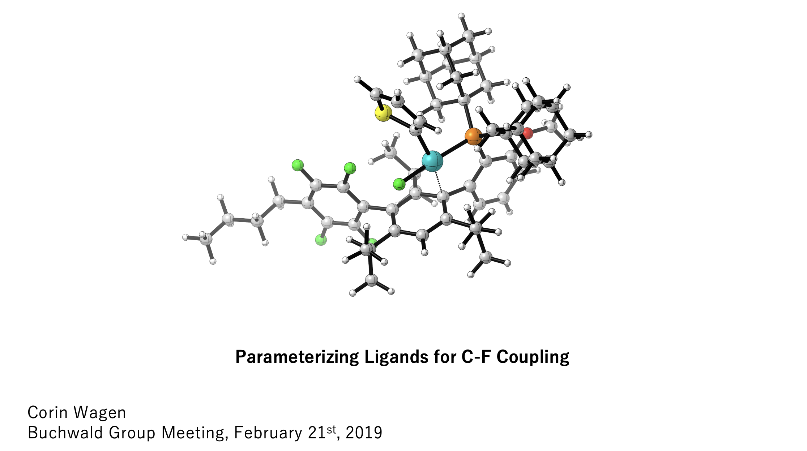
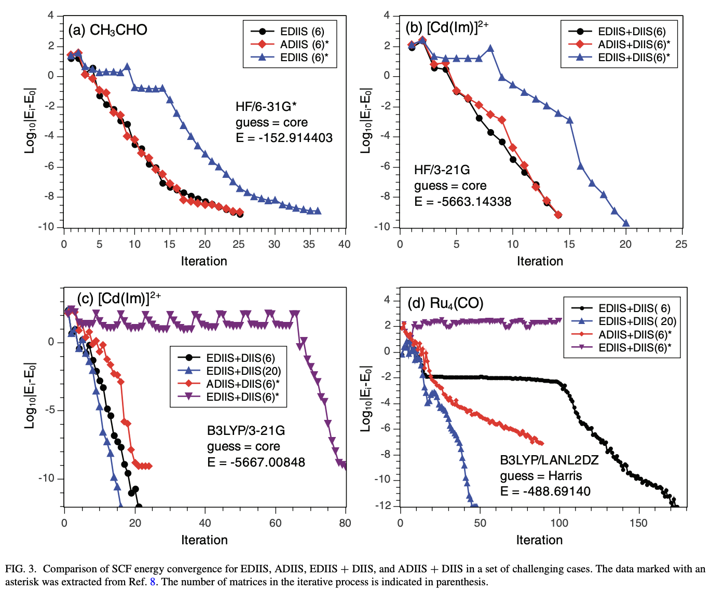
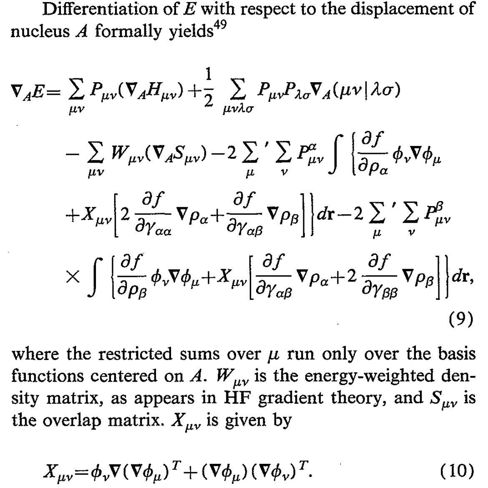

The past few years of “AI for life science” has been all about the models: AlphaFold 3, neural-network potentials, protein language models, binder generation, docking, co-folding, ADME/tox prediction, and so on.
But Chai-2 (and lots of related work) shows us that the vibes are shifting.
Models themselves are becoming just a building block; the real breakthroughs are going to happen at the workflow level, as we learn how to combine these models into robust and performant pipelines.
Workflows are the new models.
To have a state-of-the-art computational stack for drug discovery (or protein engineering, or materials design, or anything else), it’s no longer enough to have just a single state-of-the-art model.
You need a suite of modular tools that you can combine in a way that makes sense for your task. (At Rowan, we’re seeing this happen all over the industry.)
What does this mean in practice? Here are two imaginary case studies illustrating what modern computational chemistry looks like in 2025:
Materials Science
A company is developing a new inorganic photocatalyst for bulk acid–alkene coupling (following
Zhu and Nocera, 2020).
Their workflow might look something like this:
Agentic literature search for potential photo-active inorganic materials that seem synthesizable.
A diffusion or flow-matching model for 3-D structure generation where crystallography data doesn’t exist.
Rapid structural relaxation with a neural-network potential (NNP) to generate minimized structures.
Adsorption-energy estimation with another NNP to see if alkene binding is feasible.
HOMO–LUMO gap computation with periodic DFT to estimate photo-activity.
Molecular dynamics to check the stability of the bound pose.
Volcano-plot creation and final candidate scoring based on all properties.
The entire cycle can be repeated ad nauseum to generate new candidates, with the focus gradually shifting from exploration to exploitation.
Drug Discovery
A company has identified new CNS biological targets that they hope to inhibit with a small molecule.
Their workflow might look something like this:
Based on a starting hit (from a DEL, or from a known binder), generate modifications automatically or by sampling from an enumerated library.
Filter candidates by synthesizability, solubility, pKa, and other project-specific structural filters.
Dock molecules against the target and potential anti-targets using a fast method like Vina.
For hits predicted to show good selectivity, rescore with a second method (strain-corrected docking, Boltz-2, etc.).
This cycle, too, can be repeated until you run out of Modal credits a set of promising candidates is identified for synthesis.
Neither of these case studies is based on a particular company; instead, they’re meant to illustrate the sort of ML-native workflows we’re seeing from early adopters across the chemical sciences.
For simplicity, experimental integration isn’t shown here, but any sane scientist will obviously incorporate wet-lab testing as soon as possible and feed those insights back into the top of the funnel.
In any case, the overall point is clear—no single model can by itself solve every problem, and figuring out the right way to combine a set of models is itself a non-trivial system-design problem.
It’s entirely possible to create a state-of-the-art workflow simply by combining “commoditized” open-source models in a new way, and so far the resultant workflows don’t seem obvious or easy to copy.
This defies popular intuition about what constitutes a “moat” for AI companies.
More metaphysically, the line between workflows and models is blurring.
Many ML-adjacent people think of models as the active unit of science: “they have a model for X” or “we’re building a model for Y.”
But, as shown above, most state-of-the-art research today requires lots of individual ML models, and many “models” are already miniature workflows.
For instance, running a single inference call through
the Uni-pKa “model” requires enumerating all possible microstates, performing a conformer search, and running geometry optimizations on every individual conformer—just to generate the pairwise-distance matrix used as input for the actual ML model.
Why does this matter? Here are a few thoughts that I've had, after thinking about this point:
Models must be plug-and-play, interoperable, and robust—anything that can’t be integrated into higher-level workflows won’t be used.
The best models might not be those that top isolated benchmarks; in a workflow context, speed, reliability, and uncertainty
quantification also matter.
Richard Hamming’s first rule of systems engineering comes to mind: “If you optimize the components, you will probably ruin the system
performance” (see my previous book review).
Any thinking that depends on a sharp metaphysical difference between workflows and models is probably wrong.
I recently had a sales call where someone told me they weren’t interested in any workflows—they only wanted to use models.
I wanted to send them to
old Slate Star Codex posts,
but (wisely?) held my tongue.
Devops and good software engineering will rise in importance.
At Rowan, we’ve learned firsthand how hard it is to manage hundreds of thousands of workflows across a vast sea of unruly scientific dependencies.
Relatedly, the amount of scientific, computational, and engineering expertise needed to run a modern computational-science program is
rising exponentially—and shows no signs of stopping.
Thanks to Ari Wagen for reading a draft of this post.
“You dropped a hundred and fifty grand on a f***** education you coulda' got for a dollar fifty in late charges at the public library.” —Good Will Hunting
I was a user of computational chemistry for years, but one with relatively little understanding of how things actually worked below the input-file level. As I became more interested in computation in graduate school, I realized that I needed to understand everything much more deeply if I hoped to do interesting or original work in this space. From about August 2021 to December 2023, I tried to learn as much about how computational chemistry worked as I could, with the ultimate goal of being able to recreate my entire computational stack from scratch.
I found this task pretty challenging. Non-scientists don’t appreciate just how esoteric and inaccessible scientific knowledge can be: Wikipedia is laughably bad for most areas of chemistry, and most scientific knowledge isn’t listed on Google at all but trapped in bits and pieces behind journal paywalls. My goal in this post is to describe my journey and index some of the most relevant information I’ve found, in the hopes that anyone else hoping to learn about these topics has an easier time than I did.
This post is a directory, not a tutorial. I’m not the right person to explain quantum chemistry from scratch. Many wiser folks than I have already written good explanations, and my hope is simply to make it easier for people to find the “key references” in a given area. This post also reflects my own biases; it’s focused on molecular density-functional theory and neglects post-Hartree–Fock methods, most semiempirical methods, and periodic systems. If this upsets you, consider creating a companion post that fills the lacunæ—I would love to read it!
0. Background
I started my journey to understand computational chemistry with roughly three years of practice using computational chemistry. This meant that I already knew how to use various programs (Gaussian, ORCA, xTB, etc), I was actively using these tools in research projects, and I had a vague sense of how everything worked from reading a few textbooks and papers. If you don’t have any exposure to computational chemistry at all—if the acronyms “B3LYP”, “def2-TZVPP”, or “CCSD(T)” mean nothing to you—then this post probably won’t make very much sense.
Fortunately, it’s not too hard to acquire the requisite context. For an introduction to quantum chemistry, a good resource is Chris Cramer's video series from his class at UMN. This is pretty basic but covers the main stuff; it's common for one of the classes in the physical chemistry sequence to also cover some of these topics. If you prefer books, Cramer and Jensen have textbooks that go slightly more in depth.
For further reading:
Steve Bachrach has a book on computational organic chemistry which discusses applying these techniques to a variety of problems in organic chemistry.
Szabo/Ostlund and Helgaker/Jorgensen/Olsen go much more into detail on the mathematics and implementation. (I confess I've only read parts of these books.)
In general, computational chemistry is a fast-moving field relative to most branches of chemistry, so textbooks will be much less valuable than e.g. organic chemistry. There are lots of good review articles like this one which you can use to keep up-to-date with what's actually happening in the field recently, and reading the literature never goes out of style.
All of the above discuss how to learn the theory behind calculations—to actually get experience running some of these, I'd suggest trying to reproduce a reaction that you've seen modeled in the literature. Eugene Kwan's notes are solid (if Harvard-specific), and there are lots of free open-source programs that you can run like Psi4, PySCF, and xTB. (If you want to use Rowan, we've got a variety of tutorials too.) It's usually easiest to learn to do something by trying to solve a specific problem that you're interested in—I started out trying to model the effect of different ligands on the barrier to Pd-catalyzed C–F reductive elimination, which was tough but rewarding.

Molecular dynamics is important but won’t be covered further here. The best scientific introduction to MD I've come across is these notes from M. Scott Shell. If you want to go deeper, I really liked Frenkel/Smit; any knowledge of statistical mechanics will be very useful too, although I don’t have any recommendations for stat-mech textbooks. To get started actually running MD, I'd suggest looking into the OpenFF/OpenMM ecosystem, which is free, open-source, and moderately well-documented by scientific standards. (I've posted some intro scripts here.)
Cheminformatics is a somewhat vaguely defined field, basically just "data science for chemistry," and it's both important and not super well documented. If you're interested in these topics, I recommend just reading Pat Walters' blog or Greg Landrum's blog: these are probably the two best cheminformatics resources.
As with all things computational, it's also worth taking time to build up a knowledge of computer science and programming—knowing how to code is an investment which will almost always pay itself back, no matter the field. That doesn't really fit into this guide, but being good at Python/Numpy/data science/scripting is worth pursuing in parallel, if you don't already have these skills.
1. How do Things Work, Basically?
I started my computational journey by trying to write my own quantum chemistry code from scratch. My disposition is closer to “tinkerer” than “theorist,” so I found it helpful to start tinkering with algorithms as quickly as possible to give myself context for the papers I was trying to read. There are several toy implementations of Hartree–Fock theory out there that are easy enough to read and reimplement yourself:
NZNano has a compact Jupyter notebook that runs an HF/STO-3G calculation on helium hydride.
Adam Baskerville has a somewhat cleaner implementation of HF/STO-3G on HeH+, albeit one which doesn’t compute the one- and two-electron integrals.
Joshua Goings has a great general implementation of HF for any molecule or basis set, and an associated blog post explaining how to compute the integrals.
Based on these programs, I wrote my own Numpy-based implementation of Hartree–Fock theory, and got it to match values from the NIST CCCBDB database.
I highly recommend this exercise: it makes quantum chemistry much less mysterious, but also illustrates just how slow things can be when done naïvely. For instance, my first program took 49 minutes just to compute the HF/6-31G(d) energy of water, while most quantum chemistry codes can perform that calculation in under a second. Trying to understand this discrepancy was a powerful motivation to keep reading papers and learning new concepts.
Using the intuition in these papers, I was able to outline and build a simple object-oriented Hartree–Fock program in Python. My code (which I called hfpy, in allusion to the reagent) was horribly inefficient, but it was clean and had the structure of a real quantum chemistry program (unlike the toy Jupyter Notebooks above). Here’s some of the code that builds the Fock matrix, for instance:
for classname in quartet_classes.keys():
num_in_class = len(quartet_classes[classname])
current_idx = 0
while current_idx < num_in_class:
batch = ShellQuartetBatch(quartet_classes[classname][current_idx:current_idx+Nbatch])
# compute ERI
# returns a matrix of shape A.Nbasis x B.Nbasis x C.Nbasis x D.Nbasis x NBatch
ERIabcd = eri_MMD(batch)
shell_quartets_computed += batch.size
for i, ABCD in enumerate(batch.quartets):
G = apply_ERI(G, *ABCD.indices, bf_idxs, ERIabcd[:,:,:,:,i], ABCD.degeneracy(), dP)
current_idx += Nbatch
# symmetrize final matrix
# otherwise you mess up, because we've added (10|00) and not (01|00) (e.g.)
G = (G + G.T) / 2
if incremental:
molecule.F += G
else:
molecule.F = molecule.Hcore + G
print(f"{shell_quartets_computed}/{shell_quartets_possible} shell quartets computed")
Any quantum-chemistry developer will cringe at the thought of passing 5-dimensional ERI arrays around in Python—but from a pedagogical perspective, it’s a good strategy.
3. Details
Armed with a decent roadmap of what I would need to build a decent quantum chemistry program, I next tried to understand each component in depth. These topics are organized roughly in the order I studied them, but they’re loosely coupled and can probably be addressed in any order.
As I read about various algorithms, I implemented them in my code to see what the performance impact would be. (By this time, I had rewritten everything in C++, which made things significantly faster.) Here’s a snapshot of what my life looked like back then:
benzene / 6-31G(d)
12.05.22 - 574.1 s - SHARK algorithm implemented
12.20.22 - 507.7 s - misc optimization
12.21.22 - 376.5 s - downward recursion for [0](m)
12.22.22 - 335.9 s - Taylor series approx. for Boys function
12.23.22 - 300.7 s - move matrix construction out of inner loops
12.25.22 - 267.4 s - refactor electron transfer relation a bit
12.26.22 - 200.7 s - create electron transfer engine, add some references
12.27.22 - 107.9 s - cache electron transfer engine creation, shared_ptr for shell pairs
12.28.22 - 71.8 s - better memory management, refactor REngine
12.29.22 - 67.6 s - more memory tweaks
01.03.23 - 65.1 s - misc minor changes
01.05.23 - 56.6 s - create PrimitivePair object
01.07.23 - 54.7 s - Clementi-style s-shell pruning
01.08.23 - 51.7 s - reduce unnecessary basis set work upon startup
01.10.23 - 49.9 s - change convergence criteria
01.11.23 - 61.1 s - stricter criteria, dynamic integral cutoffs, periodic Fock rebuilds
01.12.23 - 42.5 s - improved DIIS amidst refactoring
01.20.23 - 44.7 s - implement SAD guess, poorly
01.23.23 - 42.6 s - Ochsenfeld's CSAM integral screening
01.30.23 - 41.7 s - improve adjoined basis set generally
02.08.23 - 38.2 s - introduce spherical coordinates. energy a little changed, to -230.689906932 Eh.
02.09.23 - 12.3 s - save ERI values in memory. refactor maxDensityMatrix.
02.15.23 - 9.0 s - rational function approx. for Boys function
02.18.23 - 8.7 s - minor memory changes, don't recreate working matrices in SharkEngine each time
Here's a rough list of the topics I studied, with the references that I found to be most helpful in each area.
3.1 ERI Computation
Writing your own QM code illustrates (in grisly fashion) just how expensive computing electron–electron repulsion integrals (ERIs) can be. This problem dominated the field’s attention for a long time. In the memorable words of Jun Zhang:
Two electron repulsion integral. It is quantum chemists’ nightmare and has haunted in quantum chemistry since its birth.
To get started, Edward Valeev has written a good overview of the theory behind ERI computation. For a broad overview of lots of different ERI-related ideas, my favorite papers are these two accounts by Peter Gill and Frank Neese. (I’ve probably read parts of Gill’s review almost a hundred times.)
Here are some other good ERI-related papers, in rough chronological order:
This 1973 paper by Raffinetti discusses a non-direct SCF strategy for storing integrals on disk, which is still commonly used for small systems.
Todd Martínez has a great series of papers discussing ERI evaluation on GPUs: 1, 2, 3
Ochsenfeld and Head-Gordon’s LinK strategy for accelerated exchange computation is very nice. (And resolution-of-the-identity approaches can help here too: see Manzer’s “occ-RI-K” strategy.)
C. David Sherrill discusses permutational symmetry in these notes.
Integral screening matters a lot; I discuss it in this blog post from January 2023, which is roughly when I was learning all of this.
3.2 SCF Convergence
Writing your own QM code also illustrates how important SCF convergence can be. With the most naïve approaches, even 15–20 atom molecules often struggle to converge—and managing SCF convergence is still relatively unsolved in lots of areas of chemistry today, like radicals or transition metals.

Different SCF-convergence strategies and how they fare on tricky systems (from Scuseria, JCP, 2012; vide infra)
This is obviously a big topic, but here are a few useful references:
This 1991 review by Schlegel and Douall is a good overview of SCF convergence questions.
The most fundamental approach is Pulay’s “direct inversion of the iterative subspace” (DIIS): the original paper is here, but this is famous enough that there are plenty of good and more modern summaries out there (1, 2, 3).
RI methods require the use of auxiliary basis sets, which can be cumbersome to deal with. This 2016 paper describes automatic auxiliary basis set generation, and this 2023 paper proposes some improvements. There’s now a way to automatically create auxiliary basis sets through the Basis Set Exchange API.
3.4 Mechanics of Density-Functional Theory
For Hartree–Fock theory, there are a lot of nice example programs (linked above); for density-functional theory, there are fewer examples. Here are a few resources which I found to be useful:
This 1988 paper, from Becke, basically describes how all DFT quadrature is done today. I find this 1996 Stratmann paper to be much more readable, though (plus it’s a linear-scaling method).
This 1993 paper by Gill and Head-Gordon discusses how to get analytical DFT gradients (among other things). Here's the key equation:

This is the clearest exposition of the math behind DFT that I’ve read, although it doesn’t cover meta-GGA functionals or range-separated hybrids. (There’s a Psi4Numpy explanation of the math behind meta-GGA functionals, if you can parse the insane Psi4 syntax.)
This other 1994 paper argues that it’s not necessary to add grid weight derivatives with large grids. People still argue about this one.
The first paper describing range-separated hybrids, as far as I can tell, is this 2003 work from Scuseria and co-workers.
3.5 Linear Scaling
For large systems, it’s possible to find pretty large speedups and reach a linear-scaling regime for DFT (excepting operations like matrix diagonalization, which are usually pretty fast anyway). This 1994 paper discusses extending the fast multipole method to Gaussian distributions, and how this can lead to linear-scaling J-matrix construction, and this 1996 paper discusses a similar approach. This other 1996 paper describes a related near-linear-scaling approach for K matrices. There are a bunch more papers on various approaches to linear scaling (Barnes–Hut, CFMM, GvfMM, Turbomole’s RI/CFMM, etc), but I think there are diminishing marginal returns in reading all of them.
3.6 Geometry Optimization
Geometry optimization for molecular systems is pretty complicated. Here’s a sampling of different papers, with the caveat that this doesn’t come close to covering everything:
This 1981 Schlegel paper explores the general considerations in optimizing molecules with quantum chemical methods.
While there are many more papers that one could read in this field, these are the two that I found to be most insightful.
3.9 Basis Sets Miscellania
I haven’t talked much about basis sets specifically, since most basis-set considerations are interwoven with the ERI discussion above. But a few topics warrant special mention:
This 1996 paper by Davidson discusses how to convert general contraction into segmented contraction, which is important since the latter is much easier to handle.
There are hundreds of other papers which could be cited on these topics, to say nothing of the myriad topics I haven’t even mentioned here, but I think there’s diminishing marginal utility in additional links. The knowledge contained in the above papers, plus ancillary other resources, were enough to let me write my own quantum-chemistry code. Over the course of learning all this content, I wrote four different QM programs, the last of which, “Kestrel,” ended up powering Rowan for the first few months after we launched.
These programs are no longer directly relevant to anything we do at Rowan. We retired Kestrel last summer, and now exclusively use external quantum-chemistry software to power our users’ calculations (although I’ve retained some strong opinions; we explicitly override Psi4’s defaults to use the Stratmann–Scuseria–Frisch quadrature scheme, for instance).
But the years I spent working on this project were, I think, an important component of my scientific journey. Rene Girard says that true innovation requires a “mastery” of the past’s achievements. While I’m far from mastering quantum chemistry, I think that I’d be ill-suited to understand the impact of recent advances in neural network potentials without having immersed myself in DFT and conventional physics-based simulation for a few years.
And, on a more personal note, learning all this material was deeply intellectually satisfying and a fantastic use of a few years. I hope this post conveys some of that joy and can be helpful for anyone who wants to embark on a similar adventure. If this guide helped you and you have thoughts on how I could make this better, please feel free to reach out!
Thanks to Peter Gill, Todd Martínez, Jonathon Vandezande, Troy Van Voorhis, Joonho Lee, and Ari Wagen for helpful discussions.
Recently, Kelsey Piper shared that o3 (at time of writing, one of the latest reasoning models from OpenAI) could guess where outdoor images were taken with almost perfect accuracy. Scott Alexander and others have since verified this claim.
I’ve been playing around with this too: with the prompt linked in Scott’s post, o3 can guess where my photos were taken almost every time, even when I intentionally avoid anything that looks like it might be too helpful. After inspecting the reasoning, I was surprised to learn that o3 can almost always estimate the latitude to within a few degrees, which vastly restricts the range of potential answers.
I didn’t think this was possible before doing the research for this post. Here’s three recent examples—see if you can estimate the latitude yourself. (You may want to open the images in a new tab to zoom in.)
o3 guessed that these were 40–45º N, 25–28 ºN, and 34–36º S; in every case the answer was within that range. (I make sure to only give o3 screenshots, so it can’t access EXIF data or otherwise cheat at this assessment.)
How is this possible? Here’s my best understanding of what o3 is doing, informed by a bunch of back-and-forth conversations with a friendly neighborhood AI model. (I’ll be assuming that the photo also has compass information, in keeping with standard GeoGuessr rules.)
Local Noon, On The Equinox
Let’s make this as simple as possible to start. On the spring equinox, at noon, at the equator, the sun is directly overhead. As a result, tall objects without any overhang won’t cast any shadows.
If you’re not on the equator, then objects will still cast a shadow, and the length of the shadow S relative to the object’s height H tells you what latitude you’re at. Formally, we can define the solar elevation θ := arctan(H/S), and approximate the latitude φ as 90º − θ.
I don’t do much mental trigonometry these days, but it’s pretty easy to make a table with some key values:
S/H
θ (Solar Elevation)
φ (Latitude)
2:1
26º
64º
1.3:1
37º
53º
1:1
45º
45º
0.7:1
55º
35º
0.5:1
63º
27º
0 (no shadow)
90º
0º
With a compass, figuring out which hemisphere you’re in is easy. In the northern hemisphere, the sun is south of you, so the shadows point north; in the southern hemisphere, the shadows point south.
Local Noon, Any Season
Unfortunately, it’s more complex than this—we’re not always on the equinox, meaning that we also have to account for solar declination (δ). The solar declination reflects how far away from the equator the sun is on any given date; δ is +23.4º on the summer solstice and -23.4º on the winter solstice. We have to adjust the above formula to take this into account: now φ ≈ 90º − θ + δ.
Qualitatively, this means that shadows are shorter in summer than winter. A H/S ratio of 1:1 implies a latitude of 22º in winter or a latitude of 68º in summer, which is the difference between Cuba and Iceland. In practice, though, o3 can often figure out the season from how the trees look and how people are dressed.
Any Time, Any Season
When we move away from noon, things get a bit more complicated. We have to employ h, the hour angle, which is equal to 0º at local noon (when the sun is directly overhead) and increments by 15º every hour. Here’s the full equation:
sin(θ) = sin(φ)*sin(δ) + cos(φ)*cos(δ)*cos(h)
(o3 says “It’s just the spherical-law-of-cosines applied to the right-angled triangle on the celestial sphere.” Trivial! If you’re curious how we go from this to the simplified noon equation above, see Appendix A.)
This is a bit too involved for a GeoGuessr game—even o3 solves this in a Python environment. Qualitatively, though, this means that as we move away from noon and cos(h) becomes smaller, the solar elevation θ shrinks. Within an hour or two of noon, we’re only off by 1–2º, but after three hours we’re overestimating the latitude by 7–10º.
This seems bad, but with a compass it’s relatively easy to check how far from noon it is. Shadows point exactly north–south at local noon, and point increasingly east or west as the hour angle increases, so looking at the shadow orientation can tell you how much to update the latitude. In practice o3 recommends just ignoring shadow-related math after 3:00 PM or before 9:00 AM, since the error becomes too high.
Putting It All Together
Here’s another recent GeoGuessr picture. Can we solve this now?
Here’s my attempt to apply what we’ve learned: we’re looking east and we can see that shadows are pointing north, so the sun is south. This means that we’re in the northern hemisphere. The shadow–height ratio is a bit tough to estimate from this picture; based on the Prius, maybe 0.5:1. So that gives us an equinox latitude of 27º N, minus say 5º for time of day (since the shadows seem angled), which leaves us with a latitude of… 22º N ± 23º depending on the season. Not terribly helpful.
I gave o3 the same image, and it told me the latitude was 12–15º N. The correct answer is 11.5 ºN (Phnom Penh).
What did we do wrong? I asked o3 what went wrong with my reasoning, and this is what it told me (lightly edited for clarity):
Wrong S:H ratio. “A Toyota Hilux / Prius roof is ≈ 1.5–1.6 m. Measuring the dark patch on the tarmac (allowing for perspective) the shadow is 0.6–0.7 m, giving height : shadow ≈ 2.3–2.5.”
Wrong hour correction. “How far the Sun drops below its noon altitude depends on the hour angle… Two hours before/after noon (h ≈ 30 °) knocks 10–15° off the altitude in the low latitudes, not 5°.”
Very wrong season correction. “Season changes δ by ±23.4 °, but the corresponding change in the Sun’s altitude is modulated by both time-of-day (cos h) and your own latitude (cos φ). Thus the swing is never a flat ±23 ° except at noon on/near the tropics…
Solve sin(67º) = sin(ϕ)*sin(δ) + cos(ϕ)*cos(δ)*cos(30º) for the full seasonal range. That inversion pins ϕ between 11° N (June solstice) and 16° N (December solstice), with the equinox coming out at ≈ 13° N.”
The last point deserves further discussion. The impact of solar declination on solar elevation is modulated both by the latitude and the hour angle—the 23.4º swing is scaled by cos(h) and by the actual latitude. With some Python code (Appendix B), we can quickly confirm that the effect is smaller at near-equatorial latitudes:
Overall, though, there’s nothing here we haven’t already discussed; o3 just understands this material better than me and can do the math properly.
Conclusions
This is a fun activity for building AI-related intuition. o3 is very good at this and is able to do something that appears superhuman. Upon close inspection, the reasoning is legible, but I’m not really able to follow the same methods myself with any degree of precision; I’m just not quite able to do any step with sufficient accuracy. I’m hoping that I’ll be able to build up my skills over time—this would be a pretty fun party trick.
Appendix A: Getting The Simplified Equation For Noon
The full equation is:
sin(θ) = sin(φ)*sin(δ) + cos(φ)*cos(δ)*cos(h)
If we assume that we’re at local noon, cos(h) = 1. This lets us apply the following identity:
cos(α−β) = cos(α)*cos(β) + sin(α)*sin(β)
To get:
sin(θ) = cos(φ - δ)
sin(θ) = sin(90º - φ + δ)
θ = 90º - φ + δ
Which is the simplified equation I presented above.
Appendix B:
Here's the Python code to generate the above plot.
import numpy as np
import matplotlib.pyplot as plt
%matplotlib inline
%config InlineBackend.figure_format = 'retina'
def solar_elevation_vs_month(hour_local: float, latitude_deg: float) -> np.ndarray:
"""
Return an array of solar-elevation angles (degrees) for each day at a given true-solar hour and latitude.
"""
lat = np.deg2rad(latitude_deg)
doy = np.arange(365)
# Approximate solar-declination model (±23.44° sine fit)
delta = np.arcsin(np.sin(np.deg2rad(23.44)) * np.sin(2 * np.pi / 365 * (doy - 80)))
# Hour angle: 0° at solar noon; +15° per hour in the afternoon
H = np.deg2rad((hour_local - 12.0) * 15.0)
# Solar-elevation formula
h = np.arcsin(np.sin(lat) * np.sin(delta) + np.cos(lat) * np.cos(delta) * np.cos(H))
return np.rad2deg(h)
if __name__ == "__main__":
plt.figure(figsize=(6, 4))
months = np.array([15, 46, 75, 105, 135, 162, 198, 228, 258, 288, 318, 344])
for h, l in [(15, 0), (15, 15), (15, 30), (15, 45), (15,60)]:
elevations = solar_elevation_vs_month(h, l)
plt.plot(np.arange(365), elevations, label=f"{h:.1f} h, {l:.1f}° N")
plt.xticks(months, ['Jan', 'Feb', 'Mar', 'Apr', 'May', 'Jun', 'Jul', 'Aug', 'Sep', 'Oct', 'Nov', 'Dec'])
plt.ylabel(f"Solar elevation (°)")
plt.xlim(0,365)
plt.ylim(0,60)
plt.legend()
plt.tight_layout()
plt.show()
May 17, 2025 A traditional iconographic depiction of Abraham's visitors.
I did not enjoy John Mark Comer’s book The Ruthless Elimination of Hurry.
Comer’s book is written to people trying to find meaning in a world that feels rushed, distracted, and isolated. At the time of writing, Comer was a Protestant pastor in Portland, Oregon, but he’s since stepped back to focus on creating resources for spiritual formation (like this book).
The book takes its title from a quote by Christian philosopher Dallas Willard:
Hurry is the great enemy of spiritual life in our day. You must ruthlessly eliminate hurry from your life.
In the book, Comer argues that hurry is incompatible with love (p. 23), patience (p. 23), joy (p. 25), peace (p. 25), wisdom (p. 52), and gratitude (p. 52). Hurry is a sign that we aren’t accepting our God-given limitations (p. 65), and hurrying causes irritability, restlessness, distraction, and isolation (pp. 27, 58, 89).
The base state of man before the modern era, Comer argues, was unhurried (pp. 42–45). God rests in Genesis 1, and Jesus himself never hurried. The cure to our modern malaise, thus, is to embrace a life marked by slowness, solitude, simplicity, prayer, and rest. Comer advocates taking a literal 24-hour sabbath, rejecting consumerism, and trying to find a “perpetual Zen-like state of Jesus-derived joy and peace” (p. 251).
Much of what Comer says is good. But the central argument of his piece, that hurrying should be eliminated, doesn’t seem defensible to me. Comer makes very few direct arguments that hurrying itself is bad, instead using hurrying as a metonym for a vaguely defined bucket of negative modern traits: isolation, anxiety, fear, and so on.
This is a classic example of a motte-and-bailey argument, popularized by Scott Alexander on Slate Star Codex. In his post “All In All, Another Brick In The Motte,” he defines a motte-and-bailey argument thusly:
So the motte-and-bailey doctrine is when you make a bold, controversial statement. Then when somebody challenges you, you retreat to an obvious, uncontroversial statement, and say that was what you meant all along, so you’re clearly right and they’re silly for challenging you. Then when the argument is over you go back to making the bold, controversial statement.
Comer does exactly this. “You must ruthlessly eliminate hurrying” is a bold, controversial statement—but the statement he actually defends is more like “anxiety and isolation are bad,” which doesn’t have quite the same transformative implications for modern Christian living.
I’ll go a step further and try to defend the assertion that hurrying can be good, actually. Here’s Genesis 18:1–8 (ESV), when Abraham receives God at Mamre (emphasis added):
And the Lord appeared to Abraham by the oaks of Mamre, as he sat at the door of his tent in the heat of the day. He lifted up his eyes and looked, and behold, three men were standing in front of him. When he saw them, he ran from the tent door to meet them and bowed himself to the earth and said, “O Lord, if I have found favor in your sight, do not pass by your servant. Let a little water be brought, and wash your feet, and rest yourselves under the tree, while I bring a morsel of bread, that you may refresh yourselves, and after that you may pass on—since you have come to your servant.” So they said, “Do as you have said.” And Abraham went quickly into the tent to Sarah and said, “Quick! Three seahs of fine flour! Knead it, and make cakes.” And Abraham ran to the herd and took a calf, tender and good, and gave it to a young man, who prepared it quickly. Then he took curds and milk and the calf that he had prepared, and set it before them. And he stood by them under the tree while they ate.
In the above passage, Abraham hurries and tells others to hurry. I think it’s pretty clear from context that Abraham’s behavior here is correct hospitality, not sinful, since God immediately blesses Abraham (v. 10) and says he’s been chosen ”to keep the way of the Lord by doing righteousness and justice” (v. 19).
Here’s a few other passages defending the practice of hurrying, which I will summarize for brevity’s sake:
Lot is commanded by angels to flee in a hurry from Sodom (Genesis 19).
In Exodus 12, the Passover meal is to be eaten in haste.
After Ziklag is raided and taken captive by the Amalekites, David and his soldiers pursue them until a third of his army is too tired to continue (1 Samuel 30).
In 2 Kings 4, Elisha commands his servant Gehazi to “run at once” to meet the Shunammite woman.
After Mary receives the revelation from Gabriel, she “went with haste” to Elizabeth (Luke 1:39).
In Luke 15, the father of the prodigal son runs out of the house, and then commands his servants to “bring quickly” the best robe.
In Acts 8, Philip runs to the Ethiopian eunuch in his chariot, following the direction of the Holy Spirit.
In 2 Timothy, Paul twice urges Timothy to come and join him “soon” and “before winter” (vv. 9, 21).
These points may seem obvious—clearly, if Amalekite raiders carried off your family, you would hurry after them! But even a trivial example like this demonstrates that hurrying is not intrinsically opposed to the will of God.
Comer also argues that Jesus himself never hurried (p. 92). This is debatable—Mark uses the word “immediately” to describe many of Jesus’s actions, but that may reflect a Markean narrative style more than the actual pace of actions. Jesus himself commands Zaccheus to hurry (Luke 19:5), and his anger cleansing the temple and agony at Gethsemane should be sufficient to dispel the idea that Jesus perpetually existed in a “Zen-like” (p. 251) stoic state. Stress is not incompatible with sanctification.
Comer further argues that we’re called to walk with God, not run with him (p. 23). This is quite literally false! In 1 Corinthians 9:25–27, Paul uses the metaphor of running to convey the discipline, self-control, and perseverance required for mature Christian living:
Do you not know that in a race all the runners run, but only one receives the prize? So run that you may obtain it. Every athlete exercises self-control in all things. They do it to receive a perishable wreath, but we an imperishable. So I do not run aimlessly; I do not box as one beating the air. But I discipline my body and keep it under control, lest after preaching to others I myself should be disqualified.
Equating maturity with a restful, non-stressed life sets Christians up for disappointment. Hebrews 11 specifically highlights the heroes “of whom the world was not worthy” who “went about in skins of sheep and goats, destitute, afflicted, mistreated” (vv. 37–38). A stressful life doesn’t mean, as Comer argues, that “something is out of whack” (p. 85). God’s rest will come, but it might not come today.
The conclusion here is not that we should hurry more. Most people hurry for bad reasons, stuck chasing selfish desires or climbing social ladders in pursuit of an elusive fulfillment. But the call of Christianity is not to abnegate these bad desires but to align them with God’s will. As Rene Girard says in I Saw Satan Fall Like Lightning (p. 13, emphasis original):
What Jesus invites us to imitate is his own desire, the spirit that directs towards the goal on which his intention is fixed: to resemble God the Father as much as possible.
What we are willing to hurry for reflects what we care about. We see this reflected in the passages above: Abraham hurries to show hospitality and welcome God into his life, David hurries to save the captives, and Mary & Philip hurry to share the good news of the gospel. We should care enough about these things that we’re willing to hurry for them.
Comer’s call to a life of virtue, peace, and rest is excellent—and at the margin, he’s probably right that most people should hurry less in their lives. But the central claim of the book is just not correct. The vision of Christian maturity contained in The Ruthless Elimination of Hurry seems a little too close to California-style Zen Buddhism and other modern mystical practices to fully align with Scripture, and I think this is bad.
Thanks to Taylor Wagen, Tony Robinson, Elias Mann, Jonathon Vandezande, and Chloe Wagen for helpful discussions, and for Ari Wagen for originally pointing me to read Girard.
In scientific computation, where I principally reside these days, there’s a cultural and philosophical divide between physics-based and machine-learning-based approaches.
Physics-based approaches to scientific problems typically start with defining a simplified model or theory for the system. For instance, a scientist attempting to simulate protein dynamics might start by defining how the energy of a system depends on its coordinates by choosing (or creating) a forcefield. Once a model’s been selected, numerical simulations are run using the model and the output of these simulations is analyzed to produce a prediction.
Physical simulations like these are extensively used today in climate modeling, orbital mechanics, computational fluid dynamics, and computational chemistry. These approaches are typically robust and relatively easy to interpret, since the underlying theory is perfectly known. Still, it’s often possible to get very complex behavior from a small set of underlying rules. Application of Newtonian gravitation, for instance, gives rise to the chaotic “three-body problem.” This combination of simple physical rules and complex emergent behavior is what makes physical simulations so powerful: starting from a well-understood model, it’s possible to gain non-trivial insights about complex systems.
ML-based approaches to scientific computation turn all of this upside down. Many ML models directly map input to output without any intermediate subtasks, making it difficult to interpret what’s going on. While physics-based methods can often extrapolate from simple test cases to complex emergent behaviors, ML-based methods frequently struggle to predict behaviors outside of what they’ve seen before. Still, ML-based methods are often far more efficient than physical methods and, since they’re not constrained by a specific theoretical framework, can handle complex phenomena where the underlying functional form is not known.
When these two subcultures collide, things often get nasty. Proponents of physics-based modeling frequently allege that ML is fundamentally unscientific, since science is all about extrapolation, and that the unreliability and interpretability of machine learning makes it ill-suited for anything except hacking benchmarks.
On the other side of the aisle, machine-learning advocates claim that physics-based modeling is basically a way for scientists to feel smart and look at pretty pictures and will never be able to capture sufficient complexity to be useful. If you think I’m exaggerating, I’m not—here’s Pranam Chatterjee discussing why structure-based models like AlphaFold are “irrelevant” to disease (emphasis added):
…if we believe Anfinsen’s hypothesis: the sequence should encode everything else, including structure. Why do you need to look at the structure of the protein to understand it? I have concluded people just feel more satisfied looking at a protein, rather than trusting an implicit language model to capture its features. Hence the Nobel Prize.
For Pranam, the physical assumptions made by models like AlphaFold—that proteins have a three-dimensional structure that’s relevant to their biology—mean that these models are incapable of describing the complexity of reality. Contra Pranam, the point that I want to make in this piece is that there’s no reason why physics- and ML-based approaches should be so opposed to one another. In fact, I’m becoming convinced that the future looks like some hybrid of both approaches.
Why? One of the big limitations of physics-based methods, at least in drug discovery, is that the underlying models often aren’t expressive enough and can’t easily be made more expressive. Molecular forcefields have only a handful of terms, which means that they can’t easily represent coupled dihedral rotation, π–π stacking, and so on—let alone bond-breaking or bond-forming processes—but even optimizing empirical parameters for all these terms quickly becomes a laborious and hard-to-scale process. In contrast, ML-based methods can scale to millions of empirical parameters or beyond without becoming intractably complex or overfit.
On the other hand, the big advantage of physics-based approaches is their generalizability—even simple rulesets, like cellular automata, can lead to immensely complex emergent behavior. This sort of extrapolation is rarely seen in scientific ML projects. A recent blog post from Pat Walters makes the observation that most cheminformatic models don’t seem capable of extrapolating outside the dynamic range of their training data. This is surprising, since even the simplest of “physical” models (like a linear equation) are capable of this extrapolation.
If a hybrid approach is to work, it must be able to capture the strengths of both methods. One of the simplest ways to do this is an energy-based approach, where scientists don’t predict an output parameter directly but instead learn an energy function which can be used to indirectly predict an output. (Yann LeCun has advocated for this.) This adds some test-time complexity, since additional computation is needed after inference to generate the final output, but also constrains the model to obey certain physical laws. (If you want to predict forces, for instance, it’s often best to do so through differentiating the predictions of an energy model, since doing this guarantees that the outputs will be a valid gradient field.)
Physics-informed ML approaches can also resolve the interpolation/extrapolation problem. Since physical equations are well-suited to extrapolation, applying a physical model to the output of an ML layer can convert interpolated intermediate states to extrapolated final results. This sort of extrapolation is well-documented in neural network potentials—for instance, ANI-1 was trained only on molecules with 8 or fewer heavy atoms but proved capable of extrapolating to significantly larger molecules with good accuracy.
One fair criticism of these hybrid physics–ML approaches is that they often require much more test-time compute than pure-ML methods: optimizing a geometry with a neural network potential can require hundreds of intermediate gradient calculations, while in theory an ML method could predict the correct geometry with a single step. But in practice I think this is an advantage. Scaling test-time compute has been an incredible boon for the LLM space, and chain-of-thought reasoning models like OpenAI’s o3 and DeepSeek-r1 are now the gold standard. To the extent that physics-informed ML methods give us the ability to spend more compute to get better answers, I suspect this will mostly be good for the field.
At Rowan, we’ve recently published a few papers in this area—Starling, an energy-based model for predicting microstate distributions and macroscopic pKa, and Egret-1, a family of neural network potentials for bioorganic simulation—and I expect we’ll keep working on hybrid physics–ML approaches in the future. Others seem to be moving in this direction too. The recent Boltz-1x model (now on Rowan!) from Gabri Corso and co-workers incorporates inference-time steering for superior physical accuracy, and Achira’s written about the merits of “a third way” in simulation built around “harmonization of the theoretical and the pragmatic.”
There’s immense room for creativity at the intersection of physics and machine learning. Virtually any part of a complex physics-based workflow can potentially be replaced with a bespoke ML model, leading to almost limitless combinatorial possibilities for experimentation. Which combinations of models, algorithms, and architectures will prove to be dead-ends, and which will unlock order-of-magnitude improvements in performance and accuracy? It’s a fun time to be working in this field.
Appendix:
I asked my co-founder Eli what he thought of this piece. He pointed out that the amount of physics one should incorporate into an ML model depends on the amount of data and the dimensionality of the problem. I asked him to explain more, and here’s what he wrote:
In ML terminology, incorporating information about the modality on which you are predicting into the design of the model is called adding inductive bias. One example of this for atomistic simulation is enforcing Euclidean equivariance into a model. This explicitly ensures that any spatial transformation to a model’s input is reflected in its output. This does ensure that physical laws are followed but also increases the computational complexity of the model, limiting system size at inference time and inference speed.
Some neural network potentials like Equiformer enforce equivariance in every operation within the model to ensure physical laws are always followed, while others enforce it only for inputs and outputs, relaxing constraints for intermediate model operations. Models like Orb-v3 don’t enforce equivariance at all, but incorporate dataset augmentation and unsupervised pre-training techniques to improve sample efficiency and learn physical laws.
As dataset size and diversity increase, we may see less of a need for physical inductive bias in models. One place we’ve seen this is with convolutional neural networks (CNNs) and vision transformers (ViTs) in computer vision: CNNs have built-in translational invariance whereas ViTs do not include any spatial inductive bias but are theoretically more flexible. We see ViTs outperforming CNNs only as dataset size and model size pass a certain threshold. If we assume that a similar pattern will hold for atomistic simulation, we might expect that the dataset size at which this threshold occurs will be greater, as molecular simulation has more degrees of freedom than computer vision.
I think this is a good point—thanks Eli! More abstractly, we might expect that incorporating explicit physics will help more in the low-data regime, while pure ML approaches will be more effective as data and compute approach infinity.
Thanks to Ari Wagen, Jonathon Vandezande, and Eli Mann for reading drafts of this post.